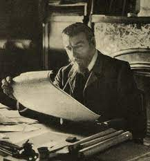
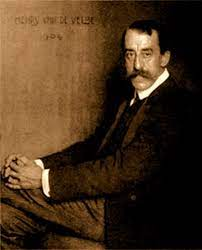
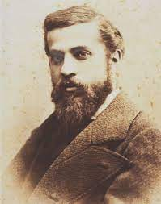
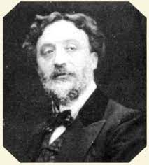
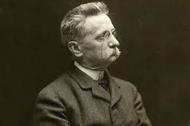
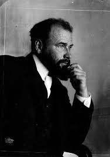

Arquitecto belga, considerado el impulsor del modernismo en arquitectura. Sus trabajos abarcaron gran
diversidad de proyectos, como viviendas, almacenes y centros políticos. Su revolucionario concepto de
distribución del interior se caracterizó por la fluidez espacial. Algunas de sus obras son la Casa Tassel,
la Casa Solvay, la Casa Horta, la Casa del Pueblo y el Hotel Autrique.
Henry van de Velde
(1863-1957)

Arquitecto, pintor y diseñador industrial belga, impulsor del modernismo. Para él el diseño era un concepto total,
que integraba el diseño arquitectónico con el diseño industrial y de interiores. Algunas obras importantes dentro del
estilo fueron la Villa Hohenhof (Hagen), Escalera del Sanatorio (Trzebiechów) y el edificio Van-de-Velde (Weimar).
Antonio Gaudí
(1852-1926)

Arquitecto español. Ha llamado la atención no solo por la belleza de sus obras, sino por los particulares métodos
para proyectar sus diseños, basados en maquetas más que en planos.
Se distinguió de otros modernistas en su interés por estudiar los estilos históricos, particularmente el gótico.
Sin embargo, no pretendió revivirlo sino utilizarlo para expandir las posibilidades creativas del nuevo arte.
Gracias a sus investigaciones, que incluyeron el análisis mecánico de las estructuras, desarrolló un lenguaje
completamente original y renovador. Entre sus obras más conocidas están el Templo Expiatorio La Sagrada Familia,
el Parque Güel y la Casa Batló.
Héctor Guimard
(1867-1942)

Arquitecto francés. Destacó por su intento de imitar las formas de la naturaleza en sus edificios, e hizo de la línea
curva un elemento distintivo. Su imaginación aplicada a la decoración interior y exterior de sus construcciones le
mereció ganar el Concurso de Fachadas de la Ciudad de París. Algunas de sus obras más conocidas son Hotel Mezzara,
las entradas del Metro de París y la Maison Coilliot, entre otras.
Lluís Domènech i Montaner
(1849-1923)

Arquitecto español, también relacionado con la política. En sus obras se combinan la rica ornamentación con la racionalidad
de las estructuras. Entre sus obras más conocidas destacan el Palacio de la Música Catalana, el Castillo de los Tres Dragones
y el Hospital de San Pablo.
Gustav Klimt
(1862-1918)

Pintor austríaco. Asociado al simbolismo y al movimiento modernista vienés. Su estilo se caracterizó por la rica ornamentación,
la sensualidad y el lujo, que introduce a través del uso de polvo de oro. Entre sus obras más conocidas destacan El beso, Retrato
de Adele Bloch Bauer I, El árbol de la vida y Esperanza.